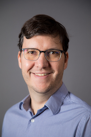

Marco.Gerosa@nau.eduMarco Aurélio Gerosa
I am a Full Professor at Northern Arizona University (NAU) and a member of the Computer Science Graduate Program at the University of São Paulo (USP), Brazil. A formal bio is available on the career page.
I research software engineering and AI applications.
Research interests
- AI applications
- Human Aspects of Software Engineering
- Open source software
- Mining Software Repositories
- Bots and chatbots
- Computer Science Education
- Computer Supported Cooperative Work (CSCW)
- Software Engineering Education